荣成海草房濒危指数可视化分析平台
基于 ESA 模型的量化评估
走进海草房村落，感受传统建筑的独特魅力
深入海草房内部，感受传统民居的生活空间与文化氛围
360° 全方位体验海草房室内空间 | 鼠标拖拽旋转 | 滚轮缩放
正在加载室内 3D 模型...
首次加载可能需要几秒钟
💡 操作提示：
🖱️ 鼠标左键拖拽 = 旋转模型 | 🖱️ 鼠标滚轮 = 缩放模型 | 🖱️ 鼠标右键拖拽 = 平移视角
基于IoT传感器的海草房环境实时监测与预警系统
💡 系统说明：模拟IoT传感器实时数据流，每3秒自动更新一次监测数据
国家级传统村落，拥有650间海草房，是胶东地区海草房保留最完整的村庄。游客可以参观海草房博物馆，体验渔家生活。
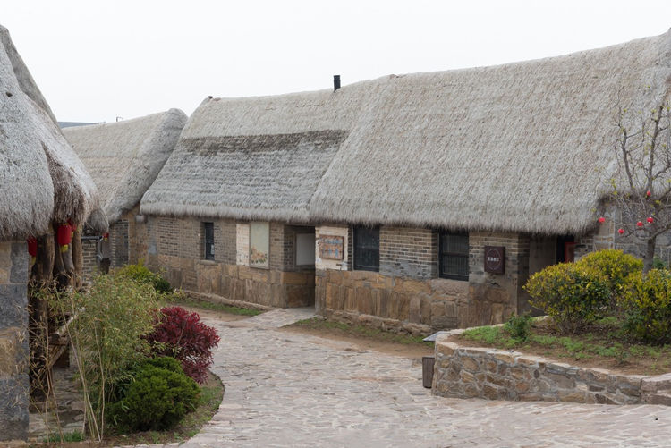
联合国"最佳旅游乡村"，以天鹅观赏和海草房民宿闻名。每年冬季，成千上万的大天鹅从西伯利亚飞来越冬。
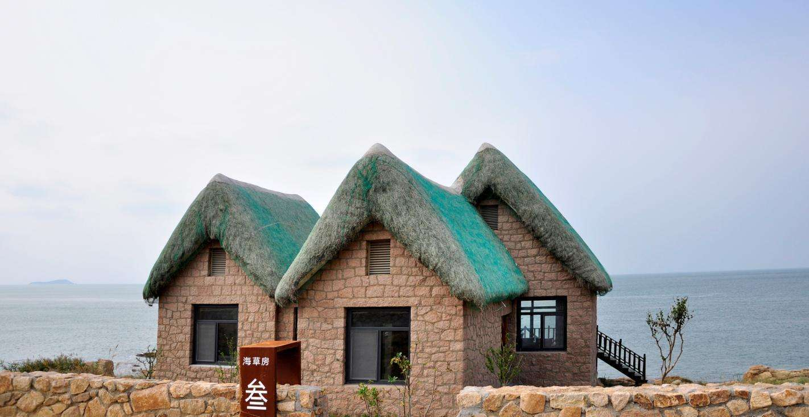
省级文保单位，始建于清康熙年间，104栋海草房保存完好。这里的海草房建筑工艺精湛，具有很高的历史价值。
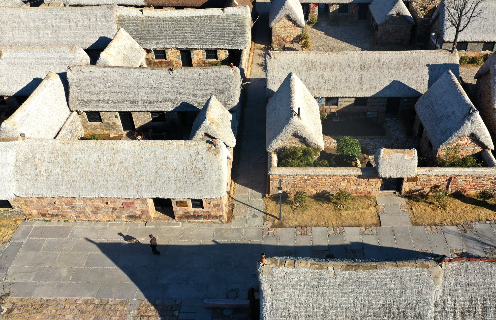
探寻荣成海草房的千年历史与文化传承

早在新石器时代，胶东半岛的先民就开始利用海草作为建筑材料。考古发现显示，距今约7000-8000年的北辛文化遗址中就有海草房的雏形。
北辛文化遗址位于山东滕州，是黄淮地区发现最早的新石器时代遗址之一，为研究海草房的起源提供了重要的考古证据。
秦汉时期，海草房建筑技术逐渐成熟。随着海上丝绸之路的发展，荣成地区成为重要的海防和贸易港口，海草房建筑得到进一步发展。
这一时期的海草房已经形成了较为完整的建筑体系，体现了当时先进的建筑技术和艺术水平。
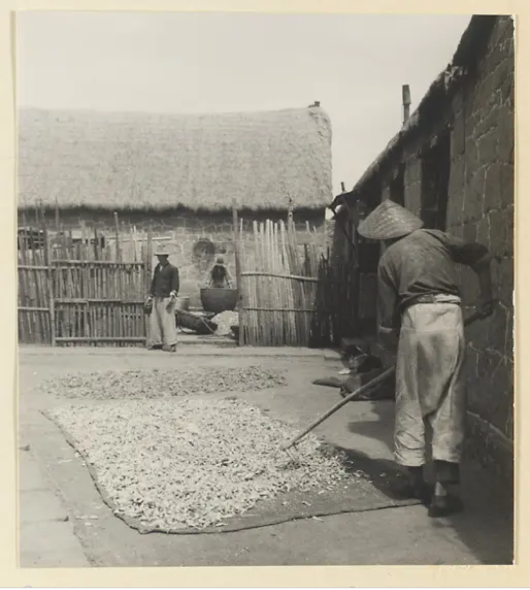
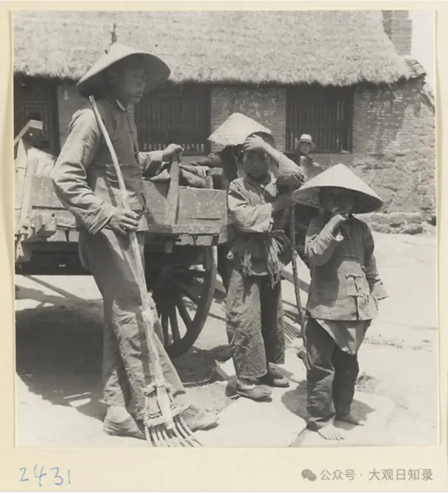
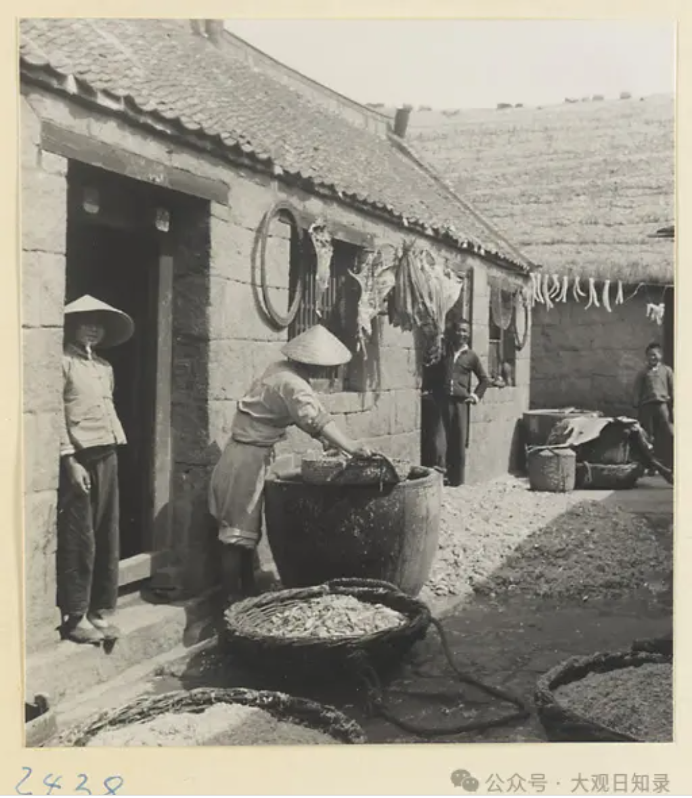
明清时期是海草房发展的鼎盛时期。荣成东楮岛村始建于明万历年间，全村现存海草房650间，其中最古老的建于清顺治年间，已有300多年历史。
这一时期的海草房建筑规模宏大，工艺精湛，成为胶东半岛沿海地区的标志性建筑，展现了传统建筑文化的精髓。
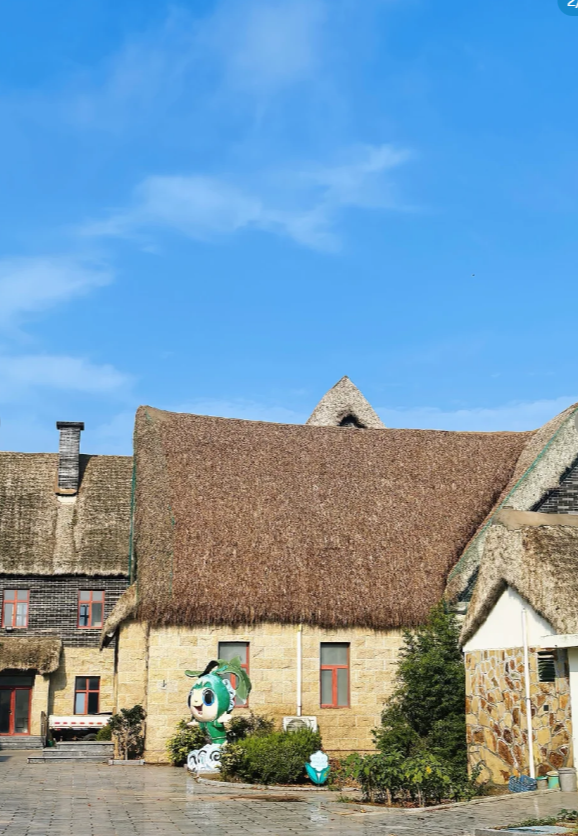
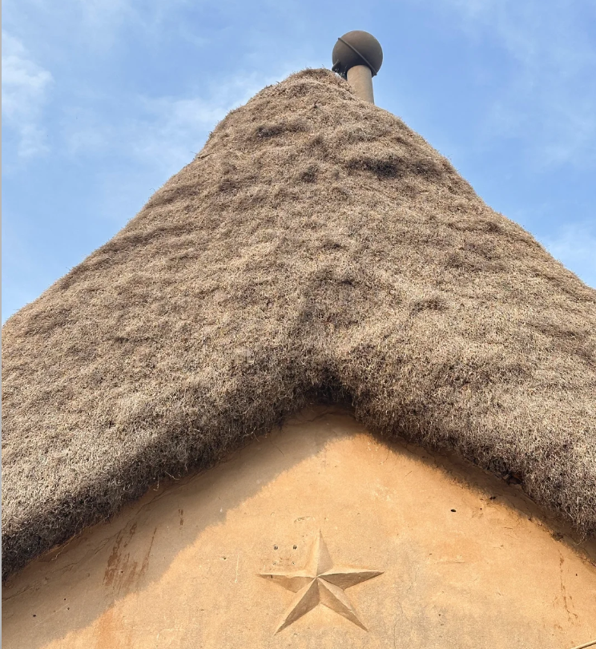
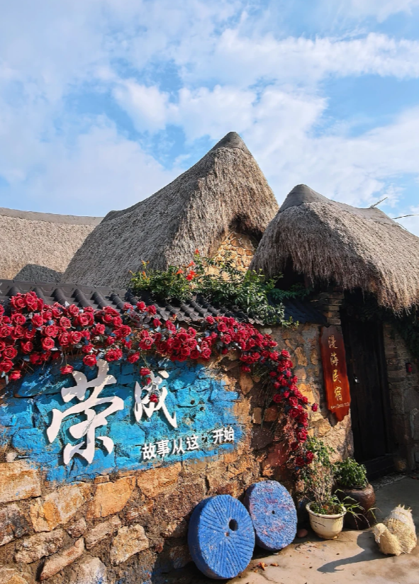
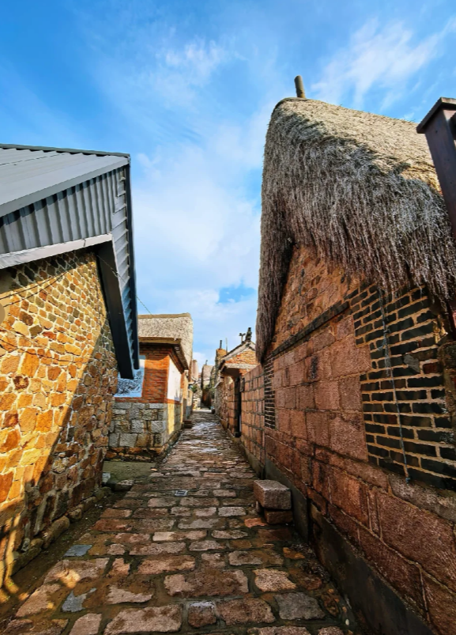
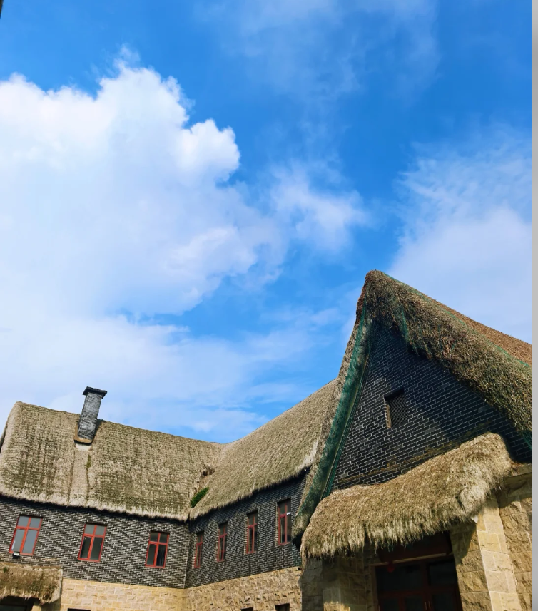
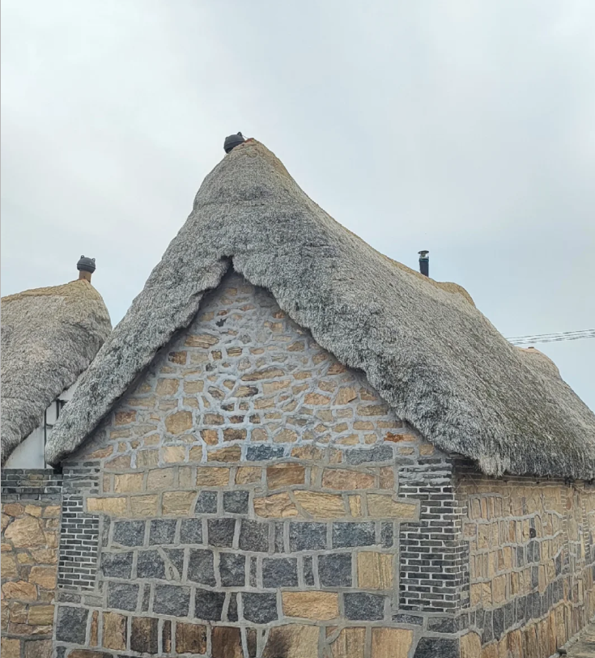
近现代以来，随着现代建筑材料的普及，海草房逐渐减少。1937年德国女摄影师赫达·莫里逊拍摄的威海石岛渔村照片，真实记录了当时海草房的风貌。
如今，荣成烟墩角村和东楮岛村的海草房得到了有效的保护和修复，成为研究中国传统建筑文化和海洋文明的重要实物资料。
穿越时空，对比不同历史时期的海草房风貌变迁
早在新石器时代，胶东半岛的先民就开始利用海草作为建筑材料。考古发现显示，距今约7000-8000年的北辛文化遗址中就有海草房的雏形。
💡 操作提示：点击时期按钮切换历史时期 | 选择对比模式查看不同效果 | 滑动对比模式下可拖动分割线
360° 全方位查看海草房建筑结构 | 鼠标拖拽旋转 | 滚轮缩放
正在加载 3D 模型...
首次加载可能需要几秒钟
💡 操作提示：
🖱️ 鼠标左键拖拽 = 旋转模型 | 🖱️ 鼠标滚轮 = 缩放模型 | 🖱️ 鼠标右键拖拽 = 平移视角
探索海草房独特的建筑结构和传统工艺
海草房的屋顶采用"人"字形结构，坡度较陡，有利于排水。屋顶覆盖着厚厚的海草，具有良好的保温隔热性能。传统海草房的屋顶厚度可达50-70厘米，能够有效抵御海风和雨雪。
墙体采用石块、青砖或土坯砌筑，坚固耐用。墙体厚度通常在40-60厘米之间，具有良好的保温隔热效果。墙角和门窗洞口处会使用更坚固的石材加固，增强结构稳定性。
门窗通常朝向东南方向，以充分利用阳光和避开冬季的西北风。窗户多为木质格扇窗，门上装有风门，形成双层防护结构，增强保温性能。
海草需要经过采集、晾晒、筛选、整理等多道工序。传统工艺要求海草必须经过三年以上的自然晾晒，去除盐分和水分，才能用于建筑。海草的选择非常讲究，通常选用大叶藻等优质海草。
海草房建造分为基础施工、墙体砌筑、屋顶铺设等多个环节。屋顶铺设是最关键的工艺，需要工匠们精湛的技艺和丰富的经验。整个建造过程完全依靠手工完成，体现了传统建筑工艺的精髓。
优质的海草房可以使用百年以上。海草中含有天然的防腐物质，具有良好的防虫、防霉性能。加上厚实的墙体和屋顶，使得海草房能够抵御各种恶劣天气，展现出卓越的耐久性。
亲手体验传统海草房建造过程，学习千年建筑工艺
整合分布地图与数据分析，全面了解海草房现状
离海距离<100m的建筑占比32%，平均自然侵蚀度47.3%。
小西村建筑年代最久(平均104年)，工艺典型性评分4.5/5。
匠人可及性评分仅2.3/5，平均年龄63.5岁。
保护海草房传统建筑，传承千年海洋文化
用一生守护一门技艺，用匠心传承千年文化
荣成市已将海草房列入非物质文化遗产保护名录，建立了多个海草房保护示范点。政府出台了多项政策措施，鼓励村民保护和修缮海草房。
当地学校开设了海草房文化课程，培养青少年对传统建筑文化的认知。同时，建立了海草房博物馆，展示海草房的历史和工艺。
政府组织老工匠传授海草房建造技艺，培养新一代传承人。建立了海草房修缮技艺培训基地，确保传统工艺得以延续。
荣成海草房作为中国传统建筑的代表，多次在国际展览中展示，成为中华文化对外交流的重要窗口。
基于 ESA 模型 · 资源 × 技艺 × 存量 × 保护 四维量化评估
按当前年均减少 30间 的速度，距最后一间海草房消失还有
点击各维度卡片查看详细数据分析
你的每一个选择，都将影响海草房的命运
你是刘师傅，68岁，荣成最后一位国家级苫匠传承人。你的双手铺过无数屋顶，但如今，徒弟只剩两人，海草越来越难找，村里的年轻人都去了城里。
今天，一家旅游公司找到你，提出了一个改变命运的方案……
每一份支持，都是对千年文化的守护 | 让我们一起保护海草房
💡 您的每一份支持都将用于海草房的保护与修复
我们承诺资金使用透明，定期公示项目进展
🌟 特别说明：本模块为演示功能，展示众筹互动的创新形式 | 实际捐赠请联系相关保护机构